Як я розповідав про сам застосунок

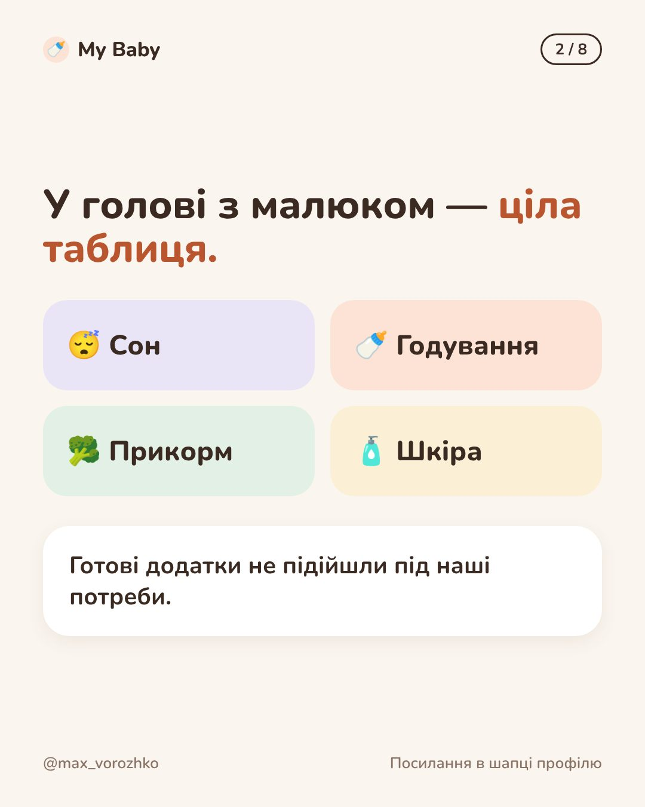
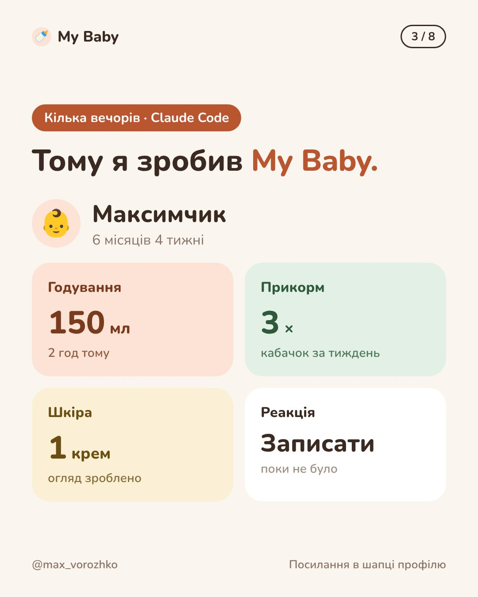
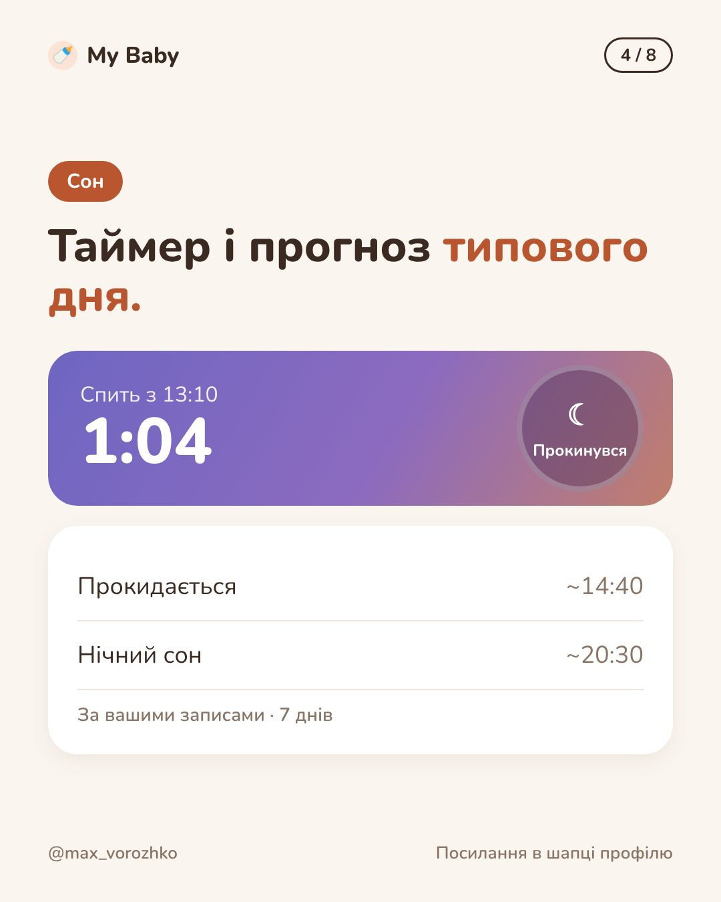
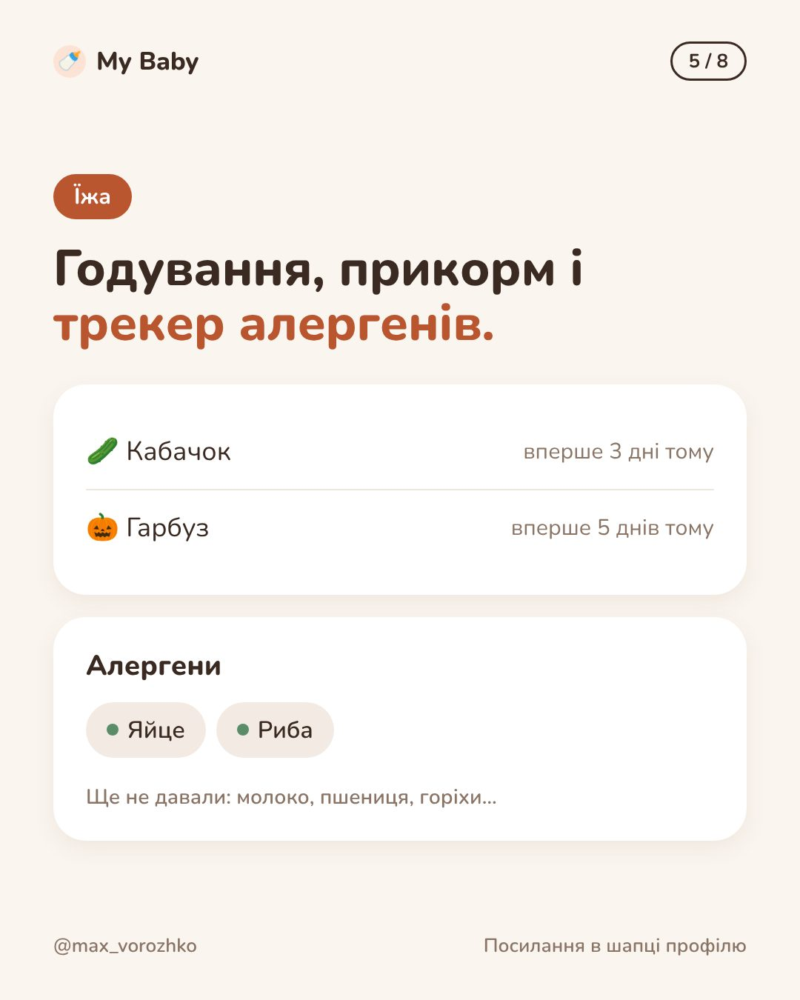
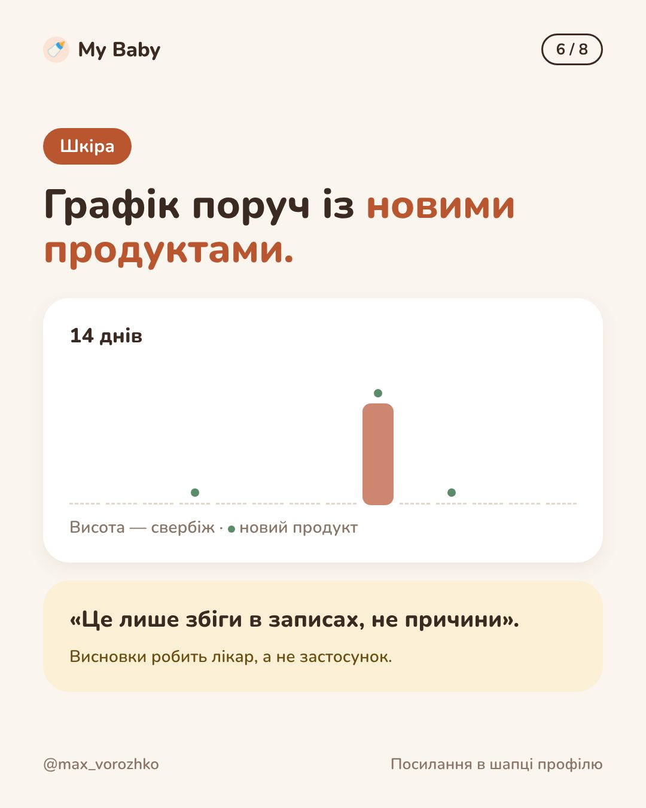
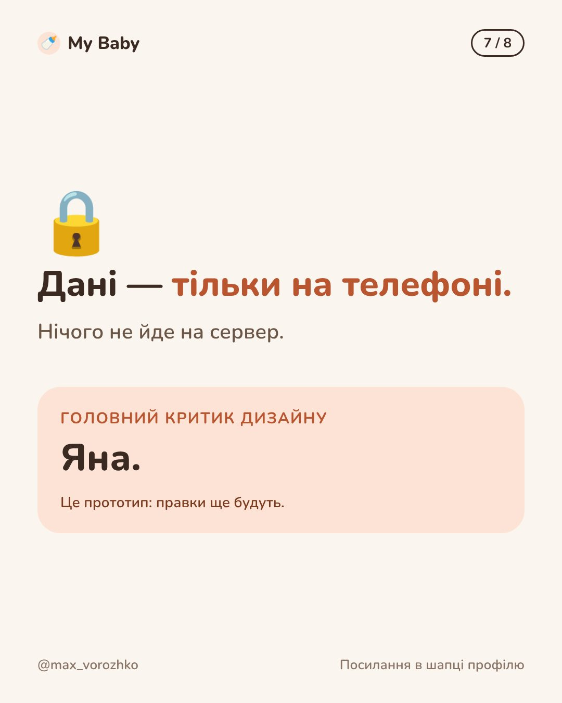

8 слайдів · натисніть, щоб збільшити
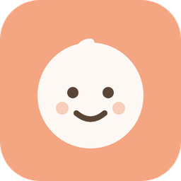
Тому я зробив собі застосунок. Без розробників, разом з AI. Сон, годування, прикорм і шкіра малюка 6–12 місяців в одному місці: один тап — і запис зроблено, а застосунок сам складає картину дня.
Коли малюк востаннє їв і з якого боку? Скільки спав удень? Записи жили в нотатках, месенджері й у голові, а втомлений мозок о третій ночі не памʼятає нічого.
Готові застосунки перевантажені порадами, рекламою й підписками. Нам з Яною треба було просто стежити за сном, годуванням і введенням прикорму, тож я зробив власний.
Я — продакт, AI — команда розробки. React · TypeScript · PWA.
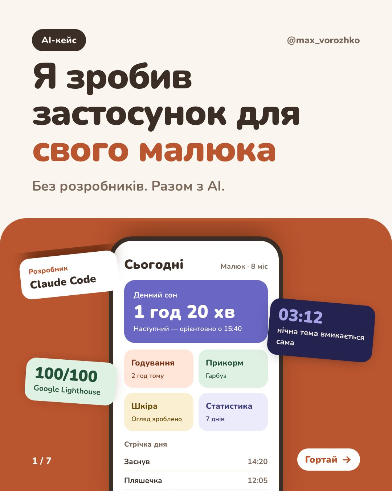
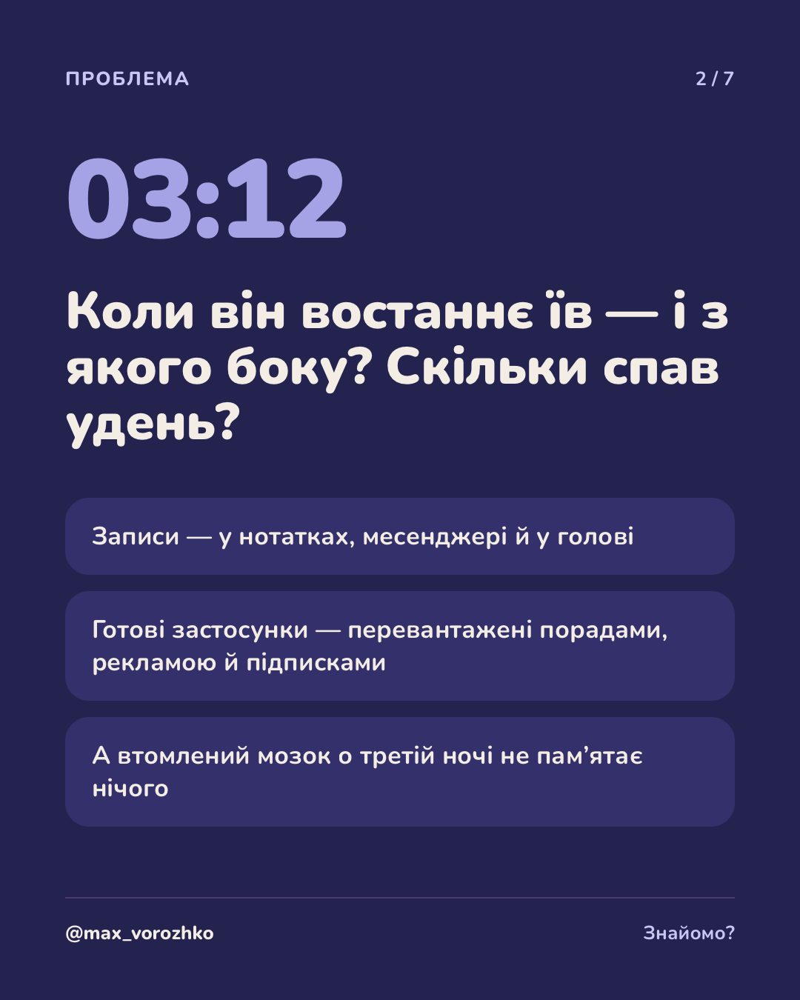
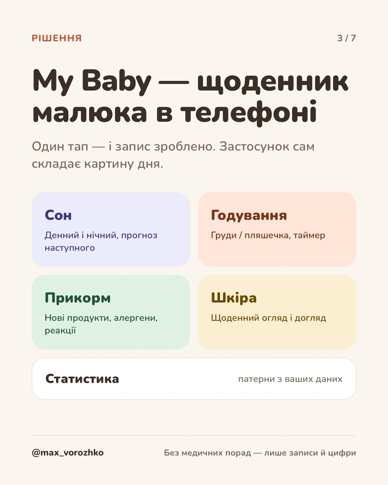
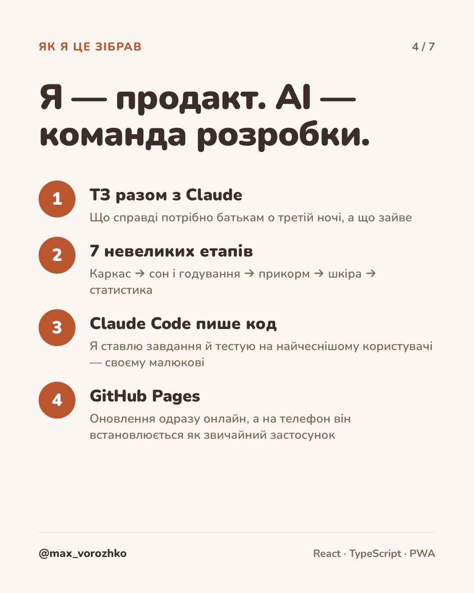
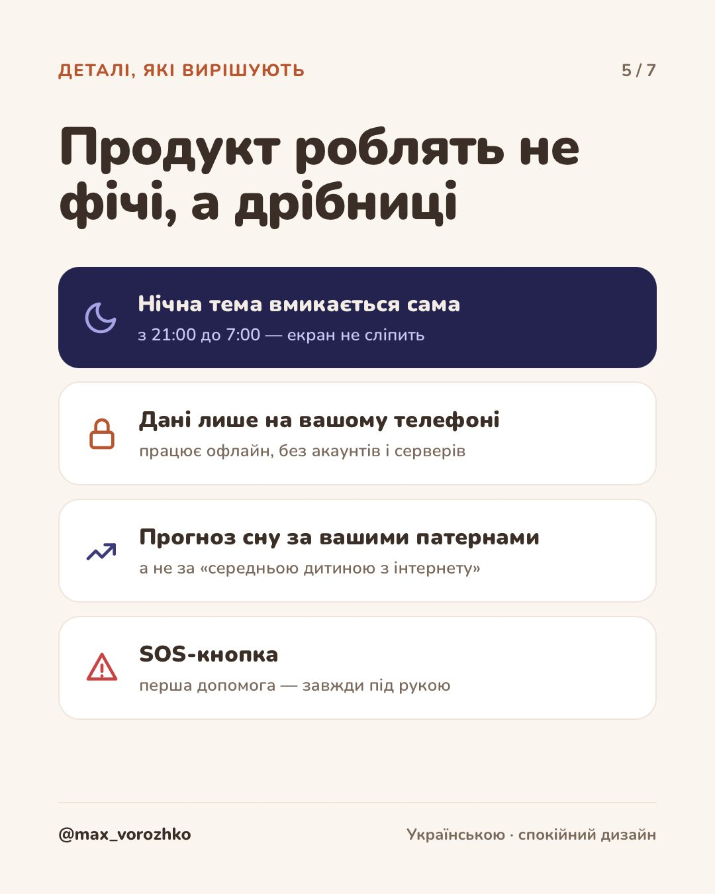
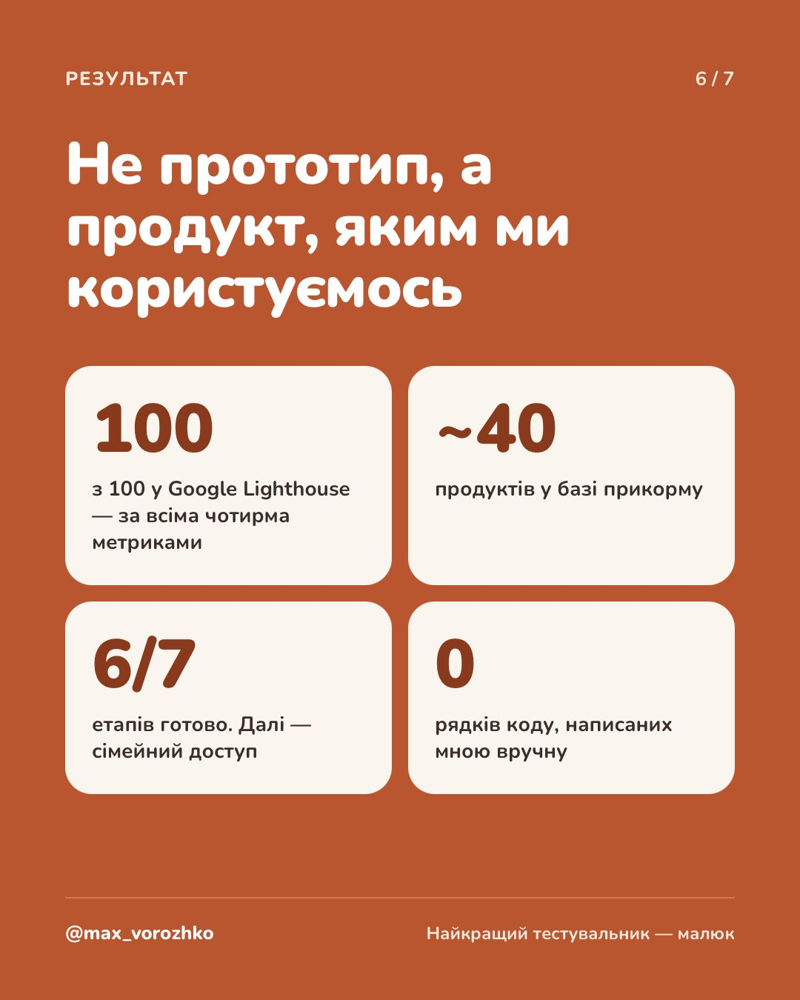
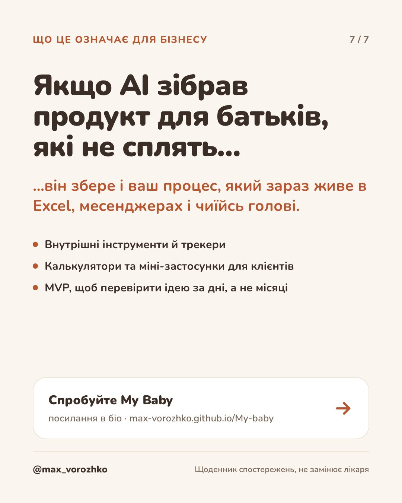
Денний і нічний сон в один тап, таймер і прогноз наступного сну за патернами саме вашого малюка, а не «середньої дитини з інтернету».
Груди або пляшечка, таймер і те, з якого боку годували востаннє.
Нові продукти, алергени й реакції: що вже давали і що ще ні.
Щоденний огляд і догляд, графік поруч із новими продуктами. Це лише збіги в записах, не причини: висновки робить лікар.
Нічна тема вмикається сама з 21:00 до 7:00, дані лише на вашому телефоні, працює офлайн, без акаунтів і серверів.
Перша допомога завжди під рукою, а статистика показує патерни з ваших даних.
My Baby — щоденник спостережень. Він не дає медичних порад і не замінює лікаря.






Не прототип, а продукт, яким ми користуємось. Найкращий тестувальник — малюк, а головний критик дизайну — Яна, тож правки ще будуть.
Далі — вхід через Google і спільний доступ: мама, тато, а за потреби й бабусі бачать записи одне одного.
Якщо AI зібрав продукт для батьків, які не сплять, він збере і ваш процес, який зараз живе в Excel, месенджерах і чиїйсь голові.
Трекери й панелі замість таблиць і чатів.
Для ваших клієнтів, з вашим брендом.
Щоб перевірити ідею за дні, а не місяці.
Напишіть коротко про нішу та задачу. Запропоную формат і наступні кроки.